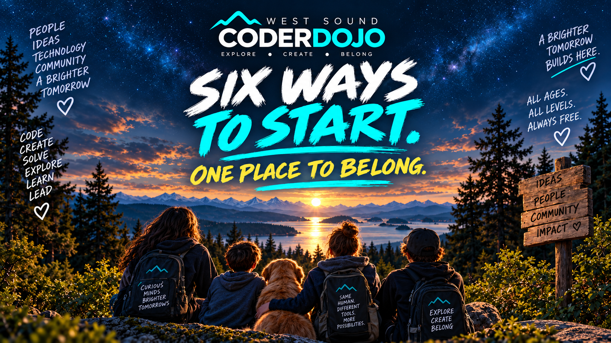

A GAME
Build something playable. Scratch, engines, story, mechanics — start anywhere.
Come curious. Leave having built something — a game, a robot, an idea, a new skill, or something nobody expected.
West Sound CoderDojo is a free, open place to explore, make, solve, experiment and learn together. Coding is part of it. AI is part of it. DIY is part of it. Curiosity is the through-line.
You do not have to pick a class, follow a track, or already know what you're doing. Start with the thing that makes you want to try.
Build something playable. Scratch, engines, story, mechanics — start anywhere.
Put an idea on the internet. Design it. Code it. Make it yours.
Direct it. Question it. Create with it. Learn where human judgment matters most.
Python, JavaScript, Scratch — or whatever language your project pulls you toward.
Raspberry Pi, circuits, repair, sensors, cardboard prototypes. DIY belongs here.
Already making something? Bring it. Have an odd idea? Even better.

Some people arrive before they can spell “JavaScript.” Others arrive after decades in technology. Some come with a parent, grandparent or sibling. Some adults come because they want to learn too.
There is no lower edge to curiosity, and no upper age limit on learning.
Mentors do not stand at the front and tell everyone what to do. People build, get stuck, ask questions, help one another, change direction and keep going.
Choose a project, a problem, a tool, or a question you want to understand.
Try it. Break it. Search. Ask. Debug. Rebuild. The learning happens in the doing.
Show somebody what worked. Help with what you know. Learn from somebody who knows something else.
Two hours. No lecture hall. No grades. No pressure to keep pace with anyone else.
With an idea — or none.
Find something worth trying.
Spectacularly, perhaps.
Someone has seen this before.
Or make a better mistake.
With something you didn't have before.
AI is a collaborator here — not a replacement for thought. Participants learn to direct, evaluate, question and create with AI while keeping human judgment in charge.
Meet Ash + explore the Sprint →Our AI in Residence helps people learn how to prompt, push back, question outputs and think with AI rather than surrender thinking to it.
Learn here. Mentor here. Help run the room. Support the work. Start another dojo. Or show someone what you figured out five minutes ago.
You do not need to be a formal teacher or an expert in everything.
Partners, sponsors, volunteers and WSTA help keep the door open.
The William Huckabee STEM Scholarship helps curiosity continue beyond Saturday.
Session changes, special events, AI Sprint, Raspberry Pi Jam, Scratch Day and more.